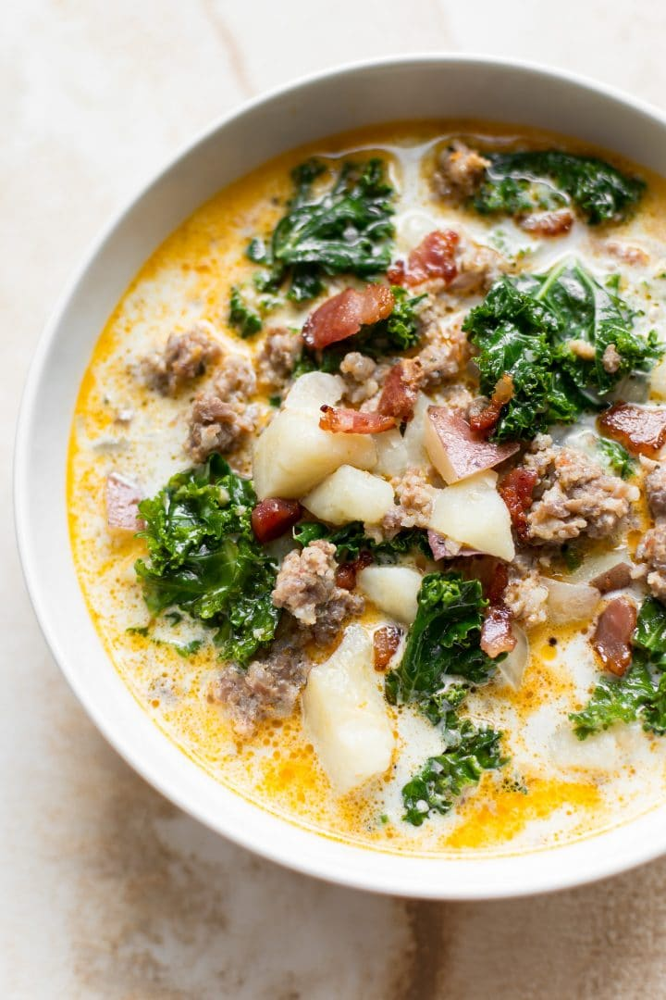

Instant Pot Zuppa Toscana

Simple, common ingredients, yet outstanding results!
Looking for a simple soup that is hearty and (somewhat) healthy? Give this one a try! Reduce your kitchen clutter by cooking everything in the Instant Pot.
Ingredients
- 5 strips bacon (thick cut works best) cut into small pieces
- 1 17.6 ounce pack Italian sausages crumbled
- 5 cloves garlic minced
- 1 medium onion chopped
- 2 cups chicken broth (beef works too)
- 4 cups water
- 4 medium-to-large red potatoes roughly diced (leave skins on)
- 1 dash Italian seasoning
- 1 cup heavy/whipping cream
- 1 small bunch of kale torn into bite-size pieces (remove stems)
- Salt and pepper to taste
Steps
- Using kitchen shears (or a knife), cut the bacon into small pieces and add it to your Instant Pot. Press the sauté button and start frying the bacon (give it about a 5 minute head start before adding the sausages so it crisps up more).
- Take the sausage meat out of its casings (I make a cut in the casings then use my fingers to break the meat into bite-size pieces) and add it to the Instant Pot as you go along. Cook until the sausages and bacon are crispy and browned.
- While the sausages and bacon cook, chop the onion and potatoes, making sure to stir the bacon and sausages occasionally.
- When the sausages and bacon are nicely browned and crispy, stir in the garlic and onion and cook for about a minute.
- Pour in the chicken broth and water. Scrape up any brown bits from the bottom of the Instant Pot.
- Add the potatoes and Italian seasoning.
- Give the soup a stir and close the Instant Pot's lid. Make sure the valve is set to "sealing".
- Press the "manual" button and set the timer for 8 minutes on high pressure. The Instant Pot will take about 10 minutes or so to come up to pressure.
- One the countdown has finished, carefully do a quick pressure release (it can splatter) and take off the lid.
- Add the cream and kale. Close the lid again and let the soup sit for another 5 minutes or so until the kale wilts (keep the Instant Pot off or on "keep warm").
- Season with salt & pepper as needed and enjoy immediately.
Recipe and Image from Salt and Lavender